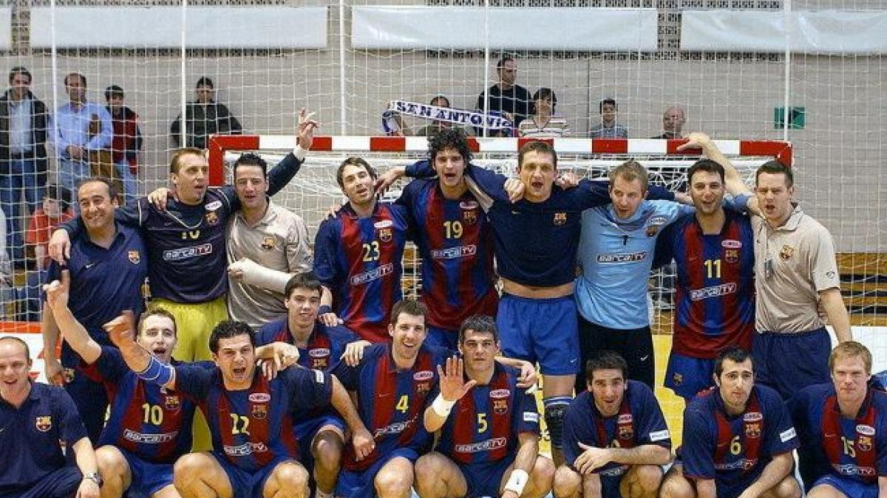
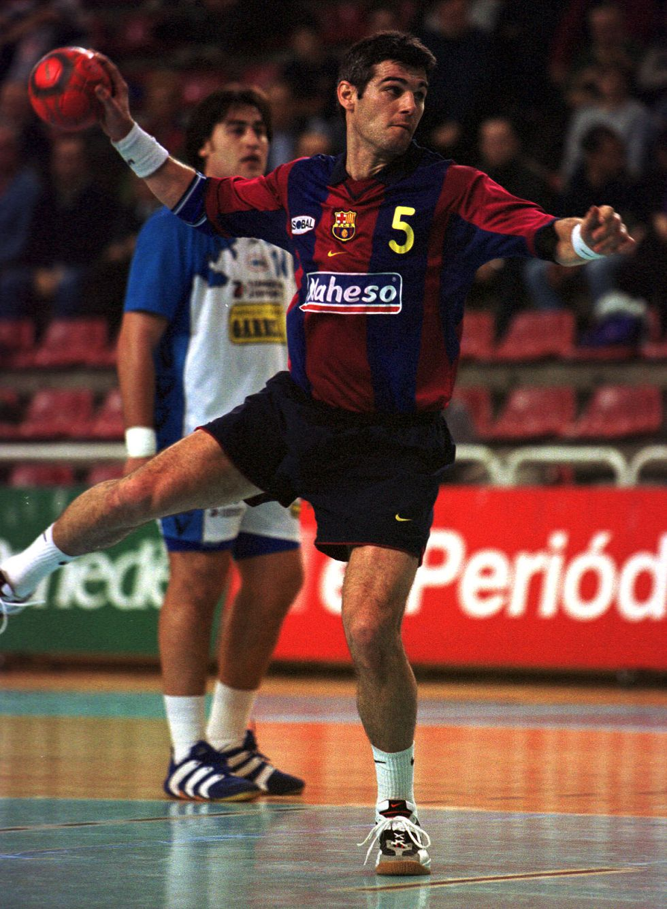

Inicio
Equipo De Barcelona

Enric Masip, el central del Barcelona, el jugador que fue el corazón del mejor equipo de balonmano de la historia, el llamado Dream Team de Valero Rivera, imparable en los noventa. Masip era un líder, un tipo especial que pensaba por todos, y que tenía organizadas pequeñas sociedades dentro del propio Barcelona.
Estuvo con los vallesanos tres temporadas, y a la tercera intentona azulgrana aceptó la oferta de Valero Rivera para jugar en el Barcelona, de 1990 a 2004, catorce temporadas en las que ganó todos los títulos de club posibles: seis Copas de Europa, Recopas, EHF, más siete ligas (una cada dos años, sería el balance) y cinco Copas del Rey. "Aquel equipo de los noventa, creo que ha sido el mejor de siempre en la historia de clubes de balonmano", rememora Masip ahora, relativamente alejado del balonmano, al que sigue a distancia sin que se le vea por el Palau donde su número cinco hace años que está retirado en honor a este jugador.
El medio, la parte de la cruz, se la regaló su amigo y compañero Mateo Garralda, otro de los jugadores con los que ha hecho media vida: desde la Selección juvenil, hasta los años en el Granollers, y luego en el Barcelona. El caso es que Mateo le prometió a Enric que si ganaban alguna medalla en Atlanta, la mitad sería suya. Dicho y hecho. Garralda cumplió la promesa, y gracias a un orfebre de Barcelona la serró en dos. Un buen día se presentó en el entrenamiento en el Palau con una bolsa de plástico de supermercado, y dentro iba la promesa. Cuatro años después, en Sydney, sí estuvo Enric, como en Barcelona 92, que tuvo la deferencia de regalarle a Urdangarín el último gol de su carrera: un penalti con el que se retiraba.
Tras su retirada pasó a la Fundación del Barcelona, y luego a la secretaría técnica del balonmano del club con Laporta en los años en el que el Ciudad Real se había hecho fuerte "y seguramente era el segundo mejor equipo de la historia". Los más notables jugadores jóvenes de España acabaron en la cantera del Barça, y otros, como el danés Mikkel Hansen, también, pero no todos triunfaron en las filas del club, "y le echaron la culpa al secretario técnico, que no tenía responsabilidad en el tiempo que jugaban, que era cosa del entrenador".
